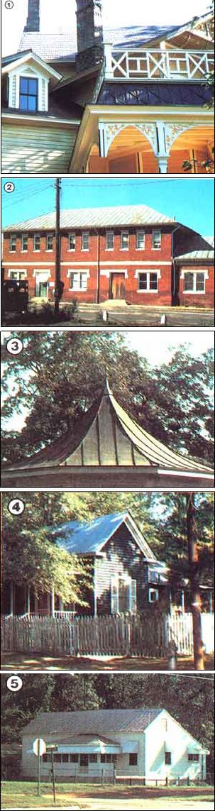

True, they can be noisy, ugly, and hot. But they have their good points, too. So here are . . .
If properly maintained, metal roofs don't have to be eyesores. And you can spot "tin tops" on jut about avery style and size of building around. For example; [1] painted steel "shingles" on a beautiful older house, [2] terneplate on a turn-of-the-century railroad station, [3] a copper-topped gazebo, [4] aluminum on a smaller home, and [5] galvanized steel, the "old standards",
When my husband and I first moved to the country, I was amazed at the number of homes in our neck of the Georgia woods that had metal roofs . . . and at the number of those tin-topped abodes that displayed "For Sale" signs out front. So the next time I spoke with a local realtor friend, I asked him if he found it difficult to market metalroofed houses. At the question, his face cracked with a knowing smile.
"Anything with a tin roof is going to sell for less . . . if you can find a buyer for it at all," he told me. "Even your typical back-to-the-lander doesn't want to take one of those buildings on. And most of the people to whom I do manage to sell metal-topped homes tell me they plan to replace the roof as soon as they get the money together."
"Well," I said to myself, "if my friend is right, and if my area is typical, it seems that buying a home topped with tin might be one way to save a good bit of money . . . and such a move could make it possible for a would-be ruralite to settle in the country that much sooner." In short, my curiosity was whetted, and-since we had some city friends looking for a bargain-priced house near us-I decided to learn all I could about metal roofs. I wanted, above all, to discover why they suffer such a poor reputation . . . and if they deserve it. It's taken some time, but what I've learned has really opened my eyes to the hidden benefits of tin-tops . . . and I'd like to share some of that knowledge with you here.
TIN AND ITS KIN
First of all, most "tin" roofs aren't made of tin. You see, there are several metals used for roofing. Below, I've listed those you're most likely to encounter, along with some of the strong and weak points of each.
Tin: The more accurate term here is terne, or even terneplate . . . but no matter what moniker you hang on the stuff, it's one of several soft metals treated with a coating of lead and tin. A tin roof that's properly installed can last a good 40 to 50 years.
Galvanized steel: This is a wonderfully inexpensive roofing material that will last 60 years or more . . . if properly cared for. It's made of alloyed steel, with a protective coating of zinc. Galvanized steel is also highly rust--resistant.
Aluminum: The use of aluminum as a roofing metal is becoming increasingly popular, since it resists corrosion and requires little maintenance. Aluminum also tends to reflect heat better than steel, thus keeping a house cooler during the summer. Aluminum roofs will last about 35 years.
Copper: You won't see copper being used for roofing much these days, even though it's by far the longest-lasting of all roofing materials (many penny-metal lids have lasted hundreds of years and appear to have hundreds more left in them). Unfortunately, this material is not only quite expensive, but also difficult to obtain.
PROS AND CONS: A GENERIC VIEW
Is a metal roof- any metal roof-worth considering if you're shopping for a home . . . or if, perhaps, you're in need of a new top for the old shanty? It's hard to say-flat out-either yes or no. But, in hopes of helping you make the choice that's best for you, I've compiled a list of tin-roof characteristics . . . both good and bad. First, let's take a look at the bad news:
To provide protection against lightning, you'll need to spend a few bucks to rig a proper grounding arrangement. What's more, in seacoast areas where the air is laden with corrosive salt, a metal roof's life span may be fairly short. Similarly, polluted air in industrial areas makes tin topping less enduring than nonmetallic roofing. And finally, metal roofs are noisy in the rain. (But what might be an "infernal racket" to one person could be a "comforting tap, tap, tap" to another.)
And now for the good news:
Metal roofs are durable (Monticello-Thomas Jefferson's Virginia home-still wears its original "tin" roof . . . and it's in fine shape to this day). And in areas that receive heavy snowfalls, such lids-with their slick, low-friction surfaces-shed the white stuff so quickly that it rarely has a chance to build up to weighty depths.
Most roofing metals are also tough enough to resist damage from hail and falling tree limbs. Moreover, since metal doesn't burn, it's especially appropriate for houses with stovepipes and chimneys . . . a comforting thought when you live far from the nearest fire station.
And to add a final trio of tin-roof routings, the large metal "shingles" are easy to install, go on quickly, and-when compared with many other roofing materials over the long haul-are generally inexpensive.
EVALUATING AN EXISTING ROOF
OK, let's say you decide that buying a house with a metal roof just might provide you with a shortcut to the country. You'll still want your new home to be topped with a healthy slab of sheeting, and you'll need to know the signs that provide clues to the condition of your prospective home's "hat".
Of course, the logical starting place is to determine the type of metal the roof is made of, and you can usually do that with just an exterior appraisal. Steel roofs-when rusty-have a reddish color. Copper oxidizes to a light green. Aluminum changes hues according to the degree of oxidation, but progressing from white to gray to black.
When you've determined the type of material used for the roof, take a look from a distance to see if there's bulging or buckling anywhere. If there is, chances are that the structure has been poorly constructed or that leaks have rotted some of the bracing or framing. If this is the case, I'd advise extreme caution . . . you could be talking about extensive-and expensive - repairs.
Try to find a way to climb up onto the roof for a bird's-eye view. Since metal roofing is laid on in large sheets, pay special attention to the seams. Also, look closely at the ridge and around the chimney (where it disappears into the roof). These are the places where you're most likely to spot signs of leaking. Are there a lot of poppedup nails or an abundance of roofing-tar patches? Again, these may indicate that the roof leaks, or has leaked in the past.
Check to see if flashings (metal "gaskets" used to direct water away from critical areas) have been installed where they should be: around chimneys and stovepipes, along eaves and hips, and in the valleys. If there's no flashing, you'll want to correct that problem right away should you buy the house.
Now go inside the building, scamper up into the attic, and-with a flashlight-peer into the dark corners. Look everywhere for signs of water damage, especially around the top of the chimney or stovepipe. And while you're up there with the dust and spiders, try to spy out the top plates of the wall studs to determine how sound they are. If they're badly rotted, it could indicate a pervasive condition in the hidden stud walls. (If a house has this problem, I'd forget about trying to make it your home.)
REPAIRING METAL ROOFS
There's one cardinal rule to remember when doing tin-top patching: Some metals, if placed in contact with certain others, can generate an electrolytic reaction that will result in rapid corrosion. To avoid that nasty possibility, be sure to patch copper roofs with copper, tin with tin, and so on.
If portions of the roof are badly damaged, you can remove the injured panels and replace them with new material, but be careful not to harm the adjoining healthy sheets when you're pulling the nails. Be sure to use neoprene-gasketed nails for the new application: They're specifically designed to prevent leaks. Drive your nails in at the high points of the corrugation . . . not in the valleys. (Or, insert neoprene-gasketed "drill screws" with a power drill to provide a watertight seal.)
If there appears to be any leakage through the existing nail holes, squeeze a dab of silicone caulking around and under the railheads before you whap them back down. (Leaking seams may also be caulked.)
Soldering is an effective method of mending splits and holes in a metal roof (except in aluminum). Solder tin and galvanized steel with rosin flux, and copper with acid flux. Be sure to heat the metal sufficiently to avoid getting a weakling cold joint, but use an iron to prevent temperatures from going too high.
If your roof doesn't have flashing in the appropriate places, you'll need to add it. For aluminum roofs, use .024" aluminum flashing material. For galvanized steel, use a matching metal, but in a thickness one gauge heavier than the roofing itself. Place flashings in the valleys, at the eaves and hips, and-of special importance-around chimneys. (Check with your local building-supply house for ready-made valley sheets and other flashing materials . . . or-if you have the necessary tools and skills-you can cut and bend them yourself.)
LIGHTNING, LIGHTNING, GO AWAY . . .
Too many metal-topped houses aren't properly grounded to prevent damage from lightning. Grounding will provide a path for the electrical current of a lightning strike so that it will bypass the house and enter the earth, where it can do no harm. If your home is not properly grounded, the lightning can easily pass through the structure, perhaps blowing out the electrical system or causing fire and personal injury.
PAINTING
Painting can spruce up the appearance of an older metal roof and add years to its useful life. Aluminum roofs don't need painting, but galvanized steel can benefit dramatically from a new finish. When you buy roof paint, don't scrimp on quality . . . unless you want to do the job again soon. One coat of good paint is usually adequate, but two is always better. The paint best suited for use on galvanized steel is a zinc-dust type . . . it'll adhere well and won't peel. You can also use the less expensive cement-based and latex coatings, but be certain that those you choose are formulated specifically for galvanized steel. Avoid aluminum-based finishes.
You can paint with a brush, a roller, or a sprayer, the first being the most materials-efficient method and the last being the fastest. But before painting, do remove any rust with a wire brush (or steel wool, if it's only a small area), and give the roof a good sweeping. Then scrub it down with clean water and an old mop. Make sure the housetop is bone-dry before you start slopping on the first coat, and pick a warm, sunny day to do the work.
CAPPING IT ALL OFF
My intention hasn't been so much to sell you on the virtues and advantages of "tin" roofs as it has been to supply you with enough basic information to balance against the bad press that metal roofing has suffered so often in the past. Of course, my investigations have made some lasting impressions on me . . . and when we build a small guest cabin on our property soon, it'll most certainly be dressed out in a shiny new galvanized cap!
|
 |
|
|